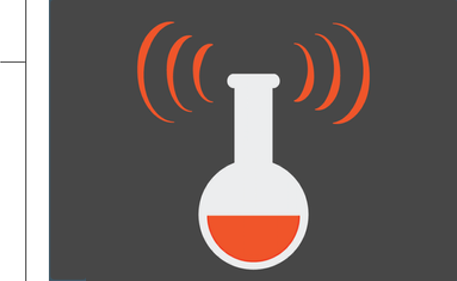

|
||||||
|
I study how organisms sense and respond to gravity and other mechanical forces. I'm a biology Ph.D. candidate at Carnegie Mellon defending September 2018, looking for opportunities in science communication.
E-mail: ashorr@andrew.cmu.edu Projects I co-founded a professional development program called Public Communication for Researchers I'm an NSF Graduate Research Fellow My talk on understanding music was an editor's choice |

|
|||||
Design by Angela Radulescu and Ardon Shorr © 2016 | ||||||